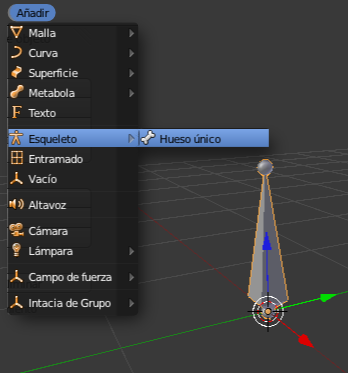
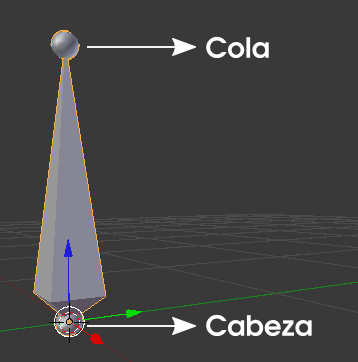
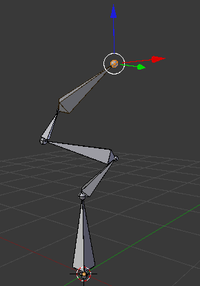
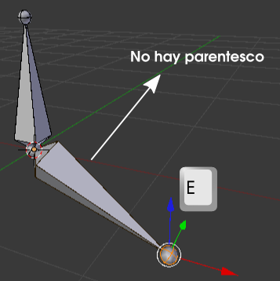

Huesos
Vamos a ver nuestro primer hueso virtual.
Eliminamos ("Supr") el cubo por defecto y añadimos un esqueleto (Añadir/Esqueleto/Hueso único).

El esqueleto no es un objeto que se trate como un sólido por lo que no aparece en el render.
Anatomía del hueso
El hueso consta de dos partes esenciales que determinan el curso de muchos acontecimientos en la edición de esqueletos.
- La cabeza contiene el Origen del hueso y por lo tanto será la que haga de bisagra en los giros ("R") y de centro para cualquier otro tipo de edición como puede ser un escaldo ("S").
- La cola marca el final del hueso y en muchos casos supone el comienzo de un nuevo hueso.
El esqueleto también dispone de Modo Objeto  y Modo Edición
y Modo Edición  , además de un tercero llamado Modo Posado
, además de un tercero llamado Modo Posado  que veremos más adelante.
que veremos más adelante.
De momento nos detenemos en Modo Edición  para ver cómo es posible disponer de la cabeza o de la cola de manera independiente para reubicarlas a nuestro antojo, como si fueran vértices de una malla.
para ver cómo es posible disponer de la cabeza o de la cola de manera independiente para reubicarlas a nuestro antojo, como si fueran vértices de una malla.
Lo más sorprendente es la edición de extrusión ("E") que, si se realiza desde la cola, origina nuevos huesos dando lugar a una cadena.
Cuando decimos cadena nos referimos al hecho de que el último hueso es hijo del penúltimo, el penúltimo del antepenúltimo y así hasta llehar al primero de los huesos que es el padre final.
Esto no ocurre cuando se hace una extrusión ("E") a partir de la cabeza del hueso. Ciertamente se crea un nuevo hueso pero no es hijo del que ha salido.
¿Qué significa todo esto?
De momento nos quedamos con la idea general de que puede haber varios huesos en un esqueleto que forman cadenas independientes. Esto no debe extrañarnos lo más mínimo porque cuando nosotros movemos un pie no implica un movimiento de un brazo y eso no les impide pertenecer al mismo esqueleto.
Sin embargo, algo que no ocurre en la realidad pero que sí puede darse en un esqueleto virtual es que haya cadenas de huesos completamente desconectadas entre sí.
El nuevo hueso debe salir a escena en Modo Edición  y debe estar seleccionado algo del esqueleto en cuestión (la cabeza, la cola, un hueso o varios). La orden para añadir el nuevo hueso es "Shift_A". Como viene siendo habitual el nuevo hueso aparece en el lugar indicado por el Cursor 3D.
y debe estar seleccionado algo del esqueleto en cuestión (la cabeza, la cola, un hueso o varios). La orden para añadir el nuevo hueso es "Shift_A". Como viene siendo habitual el nuevo hueso aparece en el lugar indicado por el Cursor 3D.